This page brings together basic information about the Cyrillic script and its use for the Mongolian language. It aims to provide a brief, descriptive summary of the modern, printed orthography and typographic features, and to advise how to write Mongolian using Unicode.
The Mongolian Cyrillic alphabet ( Монгол Кирилл үсэгmongol kirill üsegMongolian cyrillic alphabet ) is used for the standard dialect of the Mongolian language in the modern state of Mongolia. Ethnologue lists 2,640,000 native speakers of Halh Mongolian, but Wikipedia list 5.2 million speakers across all dialects, including the Inner Mongolia Autonomous Region of the People's Republic of China. Cyrillic has not been adopted as the writing system in the Inner Mongolia region of China, which continues to use the traditional Mongolian script. In Mongolia, the Halh (or Khalkha) dialect is predominant.
In the Mongolian People's Republic (Outer Mongolia), the traditional script was replaced by a Cyrillic orthography since the early 1940s, as a result of the spreading of Russian influence following the expansion of Russian Empire and the subsequent Soviet Union. Its introduction is credited with an increase in the literacy rate from 17.3% to 73.5% between 1941 and 1950.wm
Unicode 17 has 6 Cyrillic dedicated blocks, comprising 506 characters.
The Cyrillic script is an alphabet, ie. all vowels are written explicitly, alongside consonants; there is no inherent vowel in a consonant (abugidas), certain vowels are not systematically dropped (abjads), and consonant and vowel are not combined in the same character (syllabaries).
Of the 441 characters in the Unicode Cyrillic blocks, 177 are historic (33%) and 2 are for Lithuanian dialectology. The remaining 262 are just letters – no punctuation, digits, or combining characters. These are all bicameral, which brings the number of distinct modern letters to 131. Although modern Cyrillic text tends to use precomposed forms, rather than combining diacritics separately with base letters, many extended characters are formed by slightly tweaking a set of basic shapes.
Vowels Vowels are written using 16 vowel letters (30 in total, because 2 are only used in lowercase), including 4 ioticised vowels which may also indicate palatalisation of the previous consonant. Long vowels are indicated by doubling the vowel letters. A number of diphthongs are written using the semi-vowel letter й.
Vowel reduction is a significant feature of Mongolian. Non-initial short vowels are reduced to vestiges or to zero, and non-initial long vowels in the orthography are reduced to short vowel length.
Vowel harmony is another key feature, grouping vowels in a way that indicates a front or back position for the tongue root (ATR).
Standalone vowels are written using ordinary vowel letters and no special arrangements.
Vowel absence Since this is an alphabet, vowel absence in consonant clusters or after codas is marked simply by an absence of vowel letters. There is no special shaping or mark to indicate a consonant cluster.
Layout Cyrillic Mongolian text runs left to right in horizontal lines. Words are separated by spaces. Letters have an uppercase/lowercase distinction. The shapes of the upper and lowercase forms are typically the same. There can be a significant difference, however, between regular and cursive/italic shapes for the same character.
Normal text contains no combining marks (and decomposed text contains only 2). The visual forms of letters don't usually interact.
These are the sounds of Halh (or Khalkha) Mongolian.
Click on the sounds to reveal locations in this document where they are mentioned.
Phones in a lighter colour are non-native or allophones. Source Wikipedia.
Vowel sounds
Plain vowels
Diphthongs
A significant feature of Mongolian phonology is that vowel sounds are divided into front (+ATR), back (-ATR), and neutral groups (see harmony). The front and back distinction has to do with the position of the tongue root (ATR means Advanced Tongue Root). The phonology is more complicated, and sounds are somewhat more fluid than described here. See the sources for more detailed information.
Consonant sounds
labial
alveolar
post-
alveolar
palatal
velar
uvular
glottal
stop
pb
dt
kɡ
ɢ
affricate
t͡sd͡z
t͡ʃd͡ʒ
fricative
f
s ɮ
ʃ
x
nasal
m
n
ŋ
approximant
w
j
trill/flap
r
Some phonological transcriptions use t and tʰ where others use d and t for the same sounds, respectively. Similar contrasts are applied to the bilabial and affricate pairs in the repertoire (but not to the k/g pairing). Here we use the latter, partly because it is probably better indicative to the non-expert of the approximate sounds involved, and also because that corresponds with the Cyrillic letters used.
Other sources also indicate palatised versions of most consonants (eg. tʲ and mʲ) in a table such as this, but they are not shown here. Palatalisation appears to be restricted to words containing -ATR (back) vowelswm,#Consonants.
Tone
Mongolian is not a tonal language.
Structure
The basic unit of text is a word, however words can contain prefixes and suffixes.
Syllables tend to follow the pattern:
(C)V(V)(C)(C)(C)
Long vowels only occur in initial syllables. Mongolian has a strong tendency to reduce non-initial short vowels, either to epenthetic remnants or to zero. Non-initial vowels written as long are pronounced with normal length. See reduction.
Vowels
Vowel summary table
This table summarises only basic vowel to character assignments. Click on the phonetic transcriptions for more detail.
These are nominal pronunciations that don't take into account vowel harmony or vowel reduction. The vowels with IPA beginning j.. have transcriptions for standalone contexts; after a consonant the j generally transmutes to ʲ in the sense that it palatalises the consonant.
Halh Mongolian uses twelve plain vowel and one semi-vowel letters (lowercase to the left, uppercase to the right).
и,ы,ь,й,у,ү,э,ө,о,аИ, , ,Й,У,Ү,Э,Ө,О,А
й is used for diphthongs.
A number of additional letters represent vowel sounds that begin with a y-glide:
е,ю,ё,яЕ,Ю,Ё,Я
When these letters are used after a consonant, they indicate that the consonant is palatalised. When they occur as standalone vowels (at the beginning of a word or after another vowel), they are usually transcribed phonetically as j…. Note that ю can represent either a +ATR or a -ATR vowel.
Reduction plays an important part in the realisation of these vowel sounds. See reduction.
Diphthongs / digraphs
иа,уй,уа,үй,эй,ой,ай
Note that the final digraph is pronounced ɛː, rather than as a diphthong.
Vowel length
Length is phonemically distinctive. Long vowels are most commonly indicated by a doubling of the vowel letter, eg. compare
cf.
цас
цаас
These are the long plain vowels. Note the slight difference for iː.
ий,уу,үү,ээ,өө,оо,аа
When the long vowel begins with a glide, a combination of letters is used to lengthen the sound.
яа,ёо,юү,юу
Vowel harmony
Vowel harmony is an important aspect of the Mongolian language. Vowels are classed under one of the following 3 types:
A native word that begins with a -ATR vowel continues with only -ATR and/or neutral vowels. A word beginning with +ATR vowels continues with only +ATR and/or neutral vowels. Foreign loan words don't follow this pattern, and compound words (especially place names) may be made up of two words of different type.
eg.
Cүхбаатар
The +ATR vowel letters are:
э,ө,ү, ,е,ю
The -ATR vowel letters are:
а,о,у, ,я,ё,ю
The following vowel letter is neutral, and can appear in words with either +ATR or -ATR vowels.
и
Grammatical suffixes usually also have +ATR and -ATR versions.
Vowel stress & reduction
For non-stressed, non-initial syllables, some sources group consonants into those which need to be preceded or followed by a vowel:
м,н,г,л,б,в,р
And those which don't:
д,ж,з,с,т,х,ц,ч,ш
However, Mongolian pronunciation can still appear to be very different from the written text because unstressed vowels are typically reduced or omitted when a word is pronounced.
eg.
хадгалагдах
Word stress always falls on the first syllable of a Mongolian word, unless there are long vowels or diphthongs later in the word, in which case those take the stress.
The first vowel in a word is never reduced, even if unstressed.
eg.
цагдаа
харандаа
If there is more than one long vowel, the first long vowel is long, and the second is short, but not otherwise reduced.
eg.
хаашаа
Different rules apply to foreign loan words.
eg.
автобyс
машин
Observation: Sometimes vowels appear to move to places they are not in the orthography.
eg.
ойлгосон
Observation: Also, ioticised vowels may lose the second part of their sound, resulting in a remnant that sounds like j.
eg.
баярлалаа
баяртай
Standalone vowels
Standalone vowels are written using ordinary vowel letters and no special arrangements.
Vowel sounds to characters
This section maps Halh Mongolian vowel sounds to common graphemes in the Cyrillic orthography.
Plain vowels
i
lc neutralи
uc neutralИ
lcыOnly used in suffixes for masculine words (a, o, y). No uppercase. Not word-initial.
lc +ATRэWhen it becomes an epenthetic ⁱ in reduced syllables.
iː
lc neutralий
ucИЙ
ʊ
lc -ATRу
uc -ATRУ
ʊː
lc -ATRуу
ucУУ
u
lc +ATRү
uc +ATRҮ
uː
lc +ATRүү
ucҮҮ
ʲ
lcь
i̯
lcйUsed for diphthongs.
e
lc +ATRэ
uc +ATRЭ
eː
lc +ATRээ
ucЭЭ
o~ɵ
lc +ATRө
uc +ATRӨ
ɵː
lc +ATRөө
ucӨӨ
ɛː
lc -ATRай
uc -ATRАЙ
ɔ
lc -ATRо
lc -ATRО
ɔː~oː
uc -ATRоо
ucОО
a
lc -ATRа
uc -ATRА
aː
lc -ATRаа
ucАА
Ioticised vowels
jɪ
lcе
jʊ ju
lcю
ucЮ
jʊː juː
lcюу
ucЮУ
jɵ
ucе
jɔ
lcё
ucЁ
jɔː
lcёо
ucЁО
ja
lcя
ucЯ
jaː
lcяа
ucЯА
Diphthongs
i̯a
lcиа
ucИА
ʊi̯
lcуй
ucУЙ
ui̯
lcүй
ucҮЙ
u̯a
lcуа
ucУА
ei̯
lcэй
ucЭЙ
ɔi̯
lcой
ucОЙ
Vowel absence
Vowel absence principally occurs either when a consonant is a syllable coda, or when a consonant is part of a consonant cluster.
Since this is an alphabet, the absence of vowel sounds in consonant clusters or after codas is marked simply by an absence of vowel letters. There is no special shaping or mark to indicate a consonant cluster. Examples:
eg.
аалзнаас
аа,л,з,н,аа,с
савхыг
с,а,в,х,ы,г
Consonants
Consonant summary table
This table summarises only basic consonant to character assignments. Click on the phonetic transcriptions for more detail.
г represents either ɡ or ɢ. In words with +ATR (front/feminine) vowels (үэө) it is always ɡ. In words with −ATR (-ATR/masculine) vowels (уоа) it is ɢ unless it occurs in syllable-final position, when it normally reverts to ɡ (but see syllable_final).wc
Foreign sounds
п,ф,к,щ
п, ф and к are usually only used for foreign loan words, and the latter two may be pronounced pʰ and x, respectively.wc
щ is only used for Russian words.wc
Diacritics
̆,̈
Typically, Cyrillic Mongolian text will use no combining marks at all. However, when the text is decomposed, the letters й and ё become 0438 0306 and 0435 0308.
Hard & soft signs
ь,ъ
ь does one of two things:ng
separates е from a +ATR verb stem ending with a consonant, eg.
хэльеөгье
softens hard consonants, eg.
морьхуульхорь
This may result in a short ĭ sound.
eg.
арьс
амьтан
ъ is only used to separate я and ё from a -ATR verb stem ending with a consonant,ng.
eg.
явъя
уулзъя
бодъё
Codas
д,г,н,в
A number of consonants change their sound in final position. These include:
letter
normal
final
example
г (in female words)
ɢ
ɡ~k
өндөг
н
n
ŋ
будан
д
d
t
гадаад
в
v
w
арав
In a number of words, the syllable-final sound change is prevented by following the consonant with a mute, syllable-final vowel letterwc.
eg.
халбага
энэ
Consonant sounds to characters
This section maps Halh Mongolian consonant sounds to common graphemes in the Cyrillic orthography.
Sounds listed as 'infrequent' are allophones, or sounds used for foreign words, etc. Light coloured characters occur infrequently.
p pʲ
lcпUsed mostly for foreign loan words.
ucПUsed mostly for foreign loan words.
b bʲ
lcб
ucБ
t tʲ
lcт
ucТ
uc
—дwhen word final.
t͡s
lcц
ucЦ
t͡ʃ
lcч
ucЧ
d dʲ
lcд
ucД
d͡z
lcз
ucЗ
d͡ʒ
lcж
ucЖ
k kʲ
lcкUsed for transliteration.
ucКUsed for transliteration.
coda
—гwhen word-final.
ɡ ɡʲ
lcг
ucГ
ɢ
lcгin words with −ATR (back/masculine) vowels, unless it occurs in syllable-final position.
ucГ
f fʲ
lcфUsed for transliteration.
ucФ
lcвat the beginning of a cluster, sometimes.
ucВ
s
lcс
ucС
ʃ
lcш
ucШ
lcщUsed for Russian words only.
ucЩUsed for Russian words only.
ɣ
lcг
ucГ
x xʲ
lcх
ucХ
lcкUsed for transliteration.
ucКUsed for transliteration.
m mʲ
lcм
ucМ
n nʲ
lcн
ucН
ŋ
lc
—нCoda.
w̜ w̜ʲ
lcвEspecially when word-final.
ucВ
r rʲ
lcр
ucР
ɮ ɮʲ
lcл
ucЛ
Numbers
The Cyrillic orthography of Mongolian uses ASCII digits.
Currency
The Mongolian unit of currency is the tugrik, formerly subdivided into 100 möngö. The standard abbreviation is MNT, and the currency symbol is ₮.
Text direction
Mongolian in Cyrillic is written in horizontal lines with text running from left to right.
Cyrillic doesn't normally have any of the changeability of complex scripts. Characters are typically separate and self-contained. However, there can be a significant difference in shape between regular and italic/cursive font shapes for the same character.
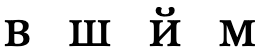
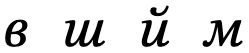
Conservative transformations between regular and italic.
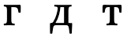
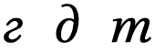
More radical transformations between regular and italic.
Note in particular the italic form of т in the figure just above, which looks similar to the italic form of м shown in the previous figure.
The shapes of the italic forms can also vary by language.w
The shape of the breve sign in Cyrillic is different from that used for Latin text.s A font such as Brill can detect the appropriate shape from the adjacent characters.
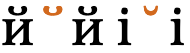
0306 between cyrillic and latin characters changes shape in the Brill font.
Case & other character transforms
Cyrillic is bicameral, and applications may need to enable transforms to allow the user to switch between cases.
Typographic units
Word boundaries
Words are separated by spaces.
Graphemes
Cyrillic Mongolian graphemes are straightforward, and can be mapped to Unicode grapheme clusters.
Grapheme clusters
Base (Combining_mark)*
The 2 combining marks that occur in Cyrillic Mongolian appear only on the rare occasions when the text is decomposed, and only one combining mark at a time appears after any base. All such decompositions conform to Unicode grapheme clusters.
Click on the text version of this word to see more detail about the composition.
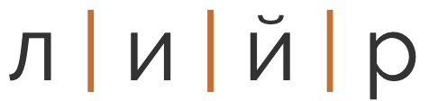
лийр
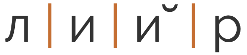
(decomposed)
Punctuation & inline features
Phrase & section boundaries
The cyrillic orthography uses ASCII punctuation.
phrase
,
;
:
sentence
.
?
!
Bracketed text
Mongolian commonly uses ASCII parentheses to insert parenthetical information into text.
start
end
standard
(
)
Quotations & citations
The standard approach is to use angle brackets by default, and the quotation marks for nested quotes. An alternative is to use the quotation marks at the top level.wq
start
end
initial
«
»
nested
„
“
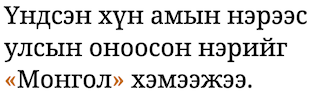
Mongolian quotation marks.
For dialogue, the quotation dash is commonly used to introduce the spoken text, but also to terminate it before identifying the speaker. — could be used for this, with spaces around it.wq
Abbreviation, ellipsis & repetition
…
Line & paragraph layout
Line breaking & hyphenation
Spaces between words provide the primary line break opportunities.u
Line-edge rules
As in almost all writing systems, certain punctuation characters should not appear at the end or the start of a line. The Unicode line-break properties help applications decide whether a character should appear at the start or end of a line.
The following list gives examples of typical behaviours for some of the characters used in Mongolian. Context may affect the behaviour of some of these and other characters.
Click/tap on the characters to show what they are.
« „ ( should not be the last character on a line.
» “ ) . , ; ! ? % should not begin a new line.
₮ should be kept with any number, even if separated by a space or parenthesis.
Text alignment & justification
Justification is done, principally, by adjusting the space between words.
Baselines, line height, etc.
Cyrillic uses the so-called 'alphabetic' baseline, which is the same as for Latin and many other scripts.
Cyrillic has little in the way of ascenders and descenders, and mostly the font metrics are the same as for ASCII text. One difference is the use of a couple of diacritics, which rise above the ASCII ascender height in capital letters..
To give an approximate idea, fig_baselines compares Latin and Cyrillic glyphs from Noto fonts.
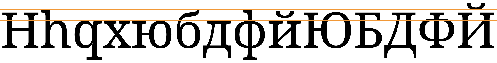
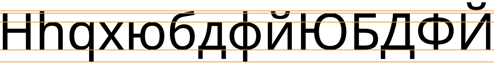
Font metrics for Latin text compared with Cyrillic glyphs in the Noto Serif (top) and Noto Sans (bottom) fonts.
fig_baselines_other shows similar comparisons for the Doulos SIL and Helvetica fonts.
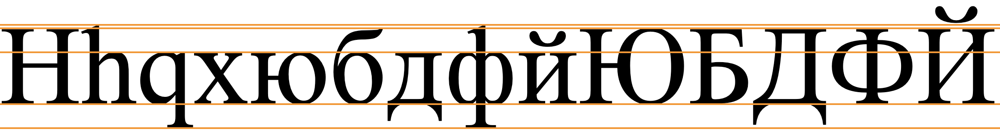
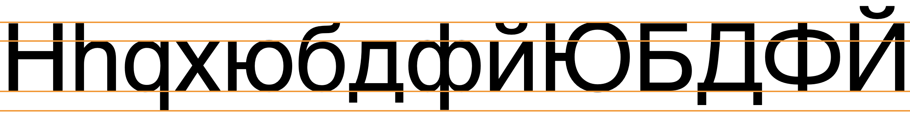
Latin font metrics compared with Cyrillic glyphs in the Doulos SIL (top) and Helvetica (bottom) fonts.